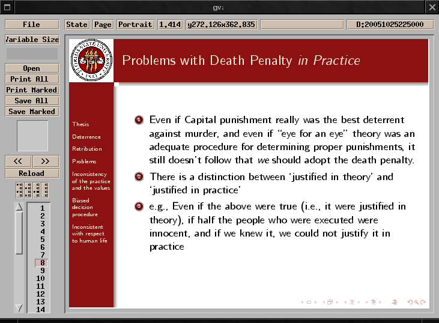

Now, I'm going to assume you're already using beamer to make
presentation slides using LaTeX. If not, you'll need to set that up.
Here's what I do:
brock@amidala:~$ sudo apt-get install latex-beamer Reading package lists... Done Building dependency tree... Done The following NEW packages will be installed: latex-beamer 0 upgraded, 1 newly installed, 0 to remove and 222 not upgraded. Need to get 2377kB of archives. After unpacking 3445kB of additional disk space will be used. Get:1 http://http.us.debian.org sid/main latex-beamer 3.01-1 [2377kB] Fetched 2377kB in 40s (59.1kB/s) Selecting previously deselected package latex-beamer. (Reading database ... 72557 files and directories currently installed.) Unpacking latex-beamer (from .../latex-beamer_3.01-1_all.deb) ... Setting up latex-beamer (3.01-1) ... mktexlsr: Updating /usr/local/share/texmf/ls-R... mktexlsr: Updating /usr/local/lib/texmf/ls-R... mktexlsr: Updating /var/lib/texmf/ls-R... mktexlsr: Updating /var/lib/texmf/ls-R-TEXMFMAIN... mktexlsr: Updating /var/cache/fonts/ls-R... mktexlsr: Done. brock@amidala:~$
YMMV. Now what you'll need are three files. One is called beamerthemeFSUTheme.sty, which either goes in your tex tree, or in the directory of the document you're creating. Bit of advice: put it in your tree, and run texhash. You'll also need something called sealfsu.pdf. that makes the little seal in the top left corner. The one I use gives a overfull error, but it compiles just fine. If you prefer a smaller seal that fits the box better, you can make it from the following enormous jpg:
You're also gonna need your .tex file. I've included the template that I use, as well as an example template from one of my ethics lectures. I'll also include a bit of a tutorial soon. I'll put it here:
Get all three relevant files here:
Just send me an email at bcr2925@fsu.edu with any questions, or else swing by Intro Ethics in DIF 201 MWF at 2:30 to see a demonstration.
I hope this is helpful.
{kind=link}